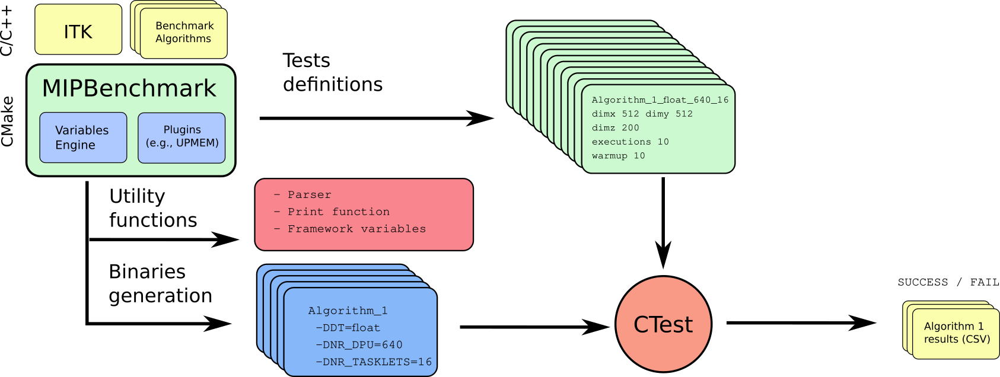

In-Memory Medical Image Processing
Rafael Palomar (Oslo University Hospital and NTNU)
Juan Gómez Luna (ETH Zürich)
10/06/2021
10/06/2021
Executive Summary
- Healthcare providers are in a continuous search for increased image resolutions.
- Problem
- Medical applications (MAs) need to cope with the processing of a growing amount of data.
- Observations
- Data movement bottleneck particularly important in MAs.
- In-memory processing (IMP) emerges as a promising way to alleviate this bottleneck.
- Idea
- Application of IMP to fundamental operations and algorithms widely used in MAs.
- Objectives
- Establishing of a framework for evaluation of medical image processing algorithms using IMP.
- Benchmarking of selected fundamental operations and algorithms.
Medical Data
Medical Images
Microscopy Images
30,000 x 30,000 x 25 x 36 (uint16) ~ 1TB
Lymphocytes in breast cancer liver metastasis biopsy https://minerva-story-htan-ohsu-demo.surge.sh/#s=2%23w=0%23g=0%23m=-1%23a=-100_-100%23v=0.4425_0.8377_0.4444%23o=-100_-100_1_1%23p=Q
The MIPBenchmark Framework
The MIPBenchmark Framework
- Framework for benchmarking of medical image processing algorithms.
- CPU / GPU (OpenCL) / DPU support.
- Declarative API.
- Generation of binaries and tests spanning the testing parameter space:
- Compilation definitions and input parameters

Algorithms and Applications
Algorithms and Applications
| Algorithm | CPU | GPU | DPU | Applications |
|---|---|---|---|---|
| Voxel counting | OK | OK | WIP | Volume computation |
| Image reduction | OK | OK | WIP | Image statistics |
| Binary thresholding | OK | OK | WIP | Image segmentation |
| Convolution | X | X | X | Image filtering |
| Image interpolation | X | X | X | Image resampling |
| Seeded region growing | X | X | X | Segmentation |
| Marching cubes | X | X | X | 3D model reconstruction |
| Histogram computation | X | X | X | Image analysis |